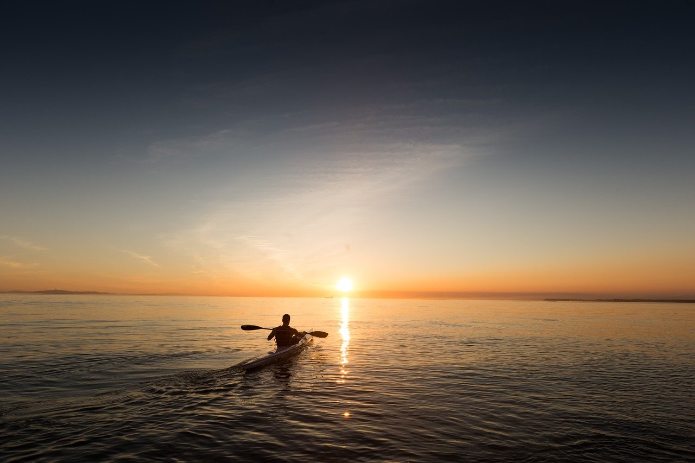

Paddla dig genom semestern
Att paddla kanot är både rogivande och lätt - särskilt på vår snälla sjö. Hyr en kanot och paddla på Storströmsjön. Ta med en matsäck och ta en paus mitt ute i vildmarken. Du kan också boka en roddbåt för en rofylld tur på sjön.
Paddla på älvarna
Är du sugen på att paddla på någon av älvarna i närheten, som Öreälven? Det går alldeles utmärkt. Hyr kanoten från oss, vi hjälper dig med transport till start och mål. Alternativt ordnar vi något med någon av våra samarbetspartners.
Hur hyr jag kanot eller roddbåt?
Kontakta oss i receptionen med dina önskemål. Skulle alla våra kanoter vara uthyrda har vi samarbeten med andra uthyrare och kan då hjälpa dig ordna paddling i andra vatten än vår sjö.
